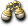
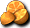

官方公告
【概要】
用從商店和怪物那裡收集的材料來做料理吧。
依材料的組合和製作次數，做出的料理會改變！
以最棒的廚師為目標，做出很多料理吧！！
【期間】
2011年10月19日（三）維修～2011年11月2日（三）維修
【內容】
１）加利卡拉鎮會出現活動NPC「可波奇」。
２）把必要的道具帶給NPC「可波奇」，就能做出各種料理。
３）製作料理時，材料的分數越高，能獲得越好的獎賞。
※ 可在神之領域官方網站的更新頁面確認材料清單。
【補充】
- 材料清單
| 道具名稱 | 分數 | 道具名稱 | 分數 | 道具名稱 | 分數 |
 海市蜃樓地圖 海市蜃樓地圖 | 1 |  危險的液體 危險的液體 | 7 | 特產牛肉 | 5 |
| 尼爾勳章 | 1 |  石灰石 石灰石 | 7 | 清酒[無明] | 5 |
| 商業許可證 | 1 | 鋼鐵鑄塊 | 7 | 美利堅麵粉 | 7 |
| 賢者之葉 | 1 | 摩斯錘 | 8 |  海賊村海鹽 海賊村海鹽 | 7 |
| 水果 | 1 | 倫斯勳章 | 8 |  超辣香料 超辣香料 | 7 |
 土耳其石 土耳其石 | 1 |  雨勳章 雨勳章 | 8 | 溜醬油 | 7 |
 金粉 金粉 | 2 |  布里茲勳章 布里茲勳章 | 8 |  甜香蕉 甜香蕉 | 7 |
 布朗尼口袋 布朗尼口袋 | 2 |  命運勳章 命運勳章 | 8 |  燉五花肉 燉五花肉 | 9 |
 水瓶 水瓶 | 2 | 暗淡寶珠 | 8 |  烤得香脆的摩斯 烤得香脆的摩斯 | 9 |
| 諾肯藥草袋 | 2 | 重型手套 | 15 |  天然酵母麵包 天然酵母麵包 | 9 |
 曼德拉水 曼德拉水 | 2 | 西拉特手環 | 25 | 水嫩的果實 | 9 |
| 骨頭 | 2 | 西拉特耳環 | 25 |  深紅蘋果 深紅蘋果 | 9 |
 浪漫鑽石 浪漫鑽石 | 2 | 騎士騎乘 | 25 | 鮮擠牛奶 | 9 |
| 純金粉 | 2 | 女武神騎乘 | 25 | 名流御用罐頭 | 9 |
| 黃銅石 | 2 | 布倫達克萊姆 | 25 |  可可100％巧克力 可可100％巧克力 | 10 |
| 木屐 | 3 | 普雷亞克萊姆 | 25 | 死亡巧克力 | 10 |
| 亞茲魔箱 | 3 |  坎賈拉巫師 坎賈拉巫師 | 25 | Q彈特製年糕 | 10 |
 線圈耳環 | 3 |  堪薩斯巫師 堪薩斯巫師 | 25 | 南國烤魚 | 10 |
 蝙蝠乾 蝙蝠乾 | 3 | 主教心靈 | 25 | 小章魚 | 10 |
 秘術赫爾莉克 秘術赫爾莉克 | 3 |  主教心靈安 主教心靈安 | 25 | 高級料亭生魚片 | 10 |
 秘術瑪娜莉克 秘術瑪娜莉克 | 3 |  普羅菲斯特加爾德 普羅菲斯特加爾德 | 25 | 狂喜白帶魚 | 10 |
| 秘術史黛莉克 | 3 |  普羅費爾加爾德 普羅費爾加爾德 | 25 | 白龍蝦 | 10 |
| 牛肉 | 4 |  宏偉板甲 宏偉板甲 | 25 | 奇蹟漁夫飯1號 | 13 |
| 長筒靴 | 4 |  利維亞板甲 利維亞板甲 | 25 | 奇蹟漁夫飯2號 | 13 |
 金屬藍寶石 金屬藍寶石 | 5 |  德里爾比艾特 德里爾比艾特 | 25 | 奇蹟漁夫飯3號 | 13 |
 金屬黃玉 金屬黃玉 | 5 |  德里沃爾克斯 德里沃爾克斯 | 25 | 奇蹟漁夫飯4號 | 13 |
 金屬紅寶石 金屬紅寶石 | 5 |  力量捲軸-地 力量捲軸-地 | 30 | 燉迪斯湯1號 | 15 |
 金屬翡翠 金屬翡翠 | 5 | 破邪捲軸-地 | 30 | 燉迪斯湯2號 | 15 |
| 金屬鑽石 | 5 | 苦澀燉菜 | 5 | 燉迪斯湯3號 | 15 |
 琥珀 琥珀 | 6 |  酸溜溜檸檬 | 5 | 燉迪斯湯4號 | 15 |
| 青銅錠 | 6 | 驚奇蘑菇 | 5 |
燉菜產出料理的分數及其效果
使用燉菜產出的料理可以獲得增益效果。
效果30分鐘，綑綁數1，不可轉讓，有效期限為1個月。
| 得分 | 道具名稱 | 效果 |
| 2~ | 苦澀燉菜 | |
| 3~ | 酸溜溜檸檬 | AC/MC-5 |
| 5~ | 驚奇蘑菇 | 每1秒回復MP2 |
| 7~ | 特產牛肉 | AAR/SAR+10% |
| 10~ | 清酒[無明] | MP回復速度+5％ |
| 13~ | 美利堅麵粉 | DAM+10 |
| 16~ | 海賊村海鹽 | INT/WIS+5 |
| 21~ | 超辣香料 | HIT+10 |
| 26~ | 溜醬油 | 移動速度+8％ |
| 34~ | 甜香蕉 | DAM+10 MDAM+5 |
| 42~ | 燉五花肉 | INT/WIS+5 |
| 50~ | 烤得香脆的摩斯 | HIT+10 MHIT+5 |
| 58~ | 天然酵母麵包 | MP回復速度+5％ |
| 68~ | 水嫩的果實 | AC/MC-5 |
| 80~ | 深紅蘋果 | MP+50 每1秒回復MP2 |
| 90~ | 現擠牛奶 | AAR/SAR+10% |
| 102~ | 名流御用罐頭 | HP/MP/SP+50(身上有速度相關魔法時無法使用) |
| 120~ | 可可100％巧克力 | INT/WIS+10 |
| 130~ | 死亡巧克力 | DAM+15% |
| 154~ | Q彈特製年糕 | MP回復速度+9% |
| 200~ | 南國烤魚 | HIT+15 MHIT+10 |
| 230~ | 小章魚 | 每1秒回復MP3 MP+100 |
| 232~ | 高級料亭生魚片 | AC/MC-10 |
| 234~ | 狂喜白帶魚 | AAR/SAR+15 |
| 236~ | 白龍蝦 | HP/SP/MP+100 移動速度+15% |
| 239~ | 奇蹟漁夫飯1號 | DAM/HIT+15% |
| 244~ | 奇蹟漁夫飯2號 | AC/MAC-10 AAR/SAR+10% |
| 246~ | 奇蹟漁夫飯3號 | INT/WIS+10 MP回復速度+5% |
| 250~ | 奇蹟漁夫飯4號 | INT/WIS+10 每1秒回復MP2 |
| 255~ | 燉迪斯湯1號 | 移動速度+8% DAM/HIT/MHIT+15% |
| 260~ | 燉迪斯湯2號 | 移動速度+8％ AC/MC-10 AAR/SAR+10 |
| 266~ | 燉迪斯湯3號 | 移動速度+8％ INT/WIS+10 MP回復速度+5% |
| 275~ | 燉迪斯湯4號 | 移動速度+8％ INT/WIS+10 每1秒回復MP2 |
留言
目前顯示最新的10件。請參閱留言頁面
- 話說到現在為止都沒有製作次數相關的資訊呢。我想跟能順便拿到特殊道具有關，不過這方面有人知道嗎？比如第100次拿到○○之類的。 -- h? 2011-10-22 (六) 12:46:34
- &#